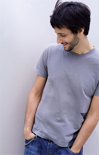

Noah Pred
THOUGHTLESS/REGULAR/SITEHOLDER/NEW KANADA
http://noahpred.com
Producing dance music and performing live for the past ten years, Noah
Pred emerged from Vancouver's underground as a sought-after techno DJ with
a sophisticated sound and unique style. Devoted to authentic and soulful
strains of techno in all its permutations, Noah's sound continues to
evolve while remaining firmly driven by the dancefloor.
Since his first records were released, his productions have received
international support, garnering critical acclaim while moving dancefloors
across the globe. As a DJ and live act, he's toured throughout Europe and
North America, performing alongside such diverse artists as Josh Wink,
Mathew Jonson, and James Holden. After a three-year stint in Montreal
working for Consigned Recordings while holding a residency at Stereobar,
Noah relocated to the West Coast to produce his field recording based
techno full-length, 'Ecocosm', which was soon released on New Kanada.
Now based in Toronto, Pred has developed a loyal and devoted following for
his potent DJ sets while running the digital imprint Thoughtless Music
from his studio headquarters. His recent productions and remixes have
been causing a buzz, and following high profile performances at last
year's MUTEK and Decibel festivals, Noah's poised for exciting things in
the year ahead - with his latest full-length 'Blind Alignments' out now on
Thougthless.